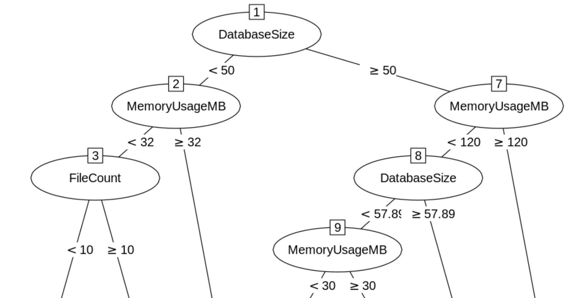
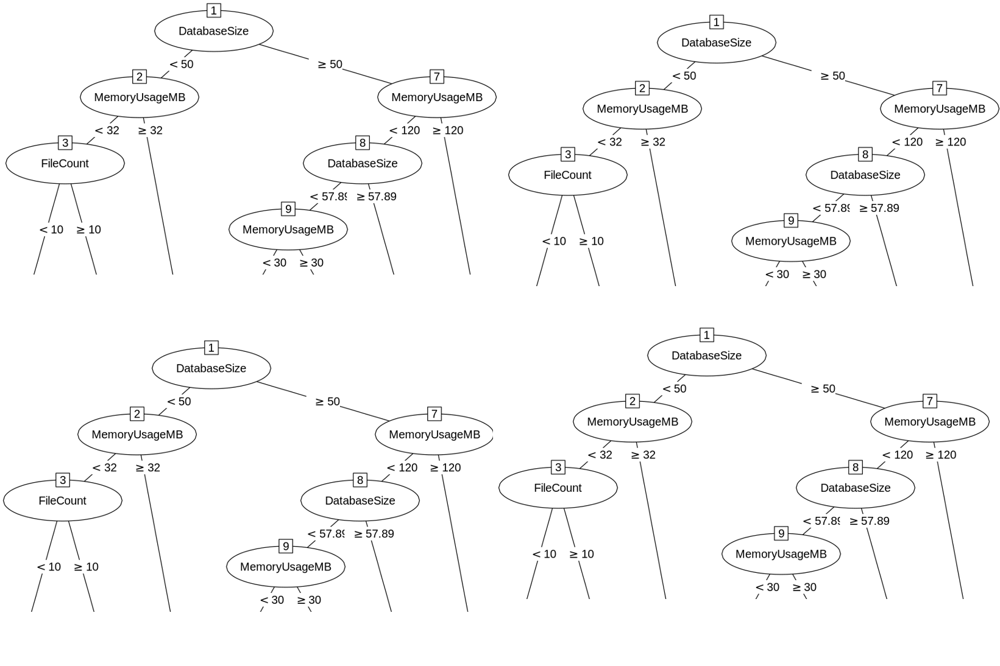

Optimizing Backup Performance
Using Data Science Techniques
Kevin Feasel (@feaselkl)https://CSmore.info/on/backups
Who Am I? What Am I Doing Here?


How Big is Your Backup Window?
How much time do you have to perform full backups? Do you (or someone you know) want to reduce that window?
Motivation
We will use data science techniques to minimize the amount of time it takes to back up our existing databases.
This will help us back up (and potentially restore) databases faster than the defaults would allow.
Agenda
- Describing the Problem
- The Settings
- Analysis
- What's Next?
Describing the Problem
Backups (and restores) are critical for database administrators, but it can take a lot of time to back up a large database.
If you have a fixed amount of time to take backups, you might run into trouble as your databases grow.
What Can We Do?
- Use read-only filegroups.
- Use newer editions of SQL Server like 2017.
- Remove obsolete tables.
- Use data compression, columnstore indexes, etc. to reduce data size.
- Split data across multiple filegroups.
- Use differential backups between full backups.
- Configure backup settings.
Agenda
- Describing the Problem
- The Settings
- Analysis
- What's Next?
Backing Up a Database
The simplest settings:
Block Size
Description
The physical block size.
Valid values
{ 0.5kb, 1kb, 2kb, 4kb, 8kb, 16kb, 32kb, 64kb }
Advice
This really only matters for backup tapes and CD-ROMs but it is still settable.
Max Transfer Size
Description
Maximum amount of data to be transferred per operation.
My working metaphor for this is a bucket.
Valid values
{ 64kb, 128kb, 256kb, 512kb, 1mb, 2mb, 4mb }
Buffer Count
Description
Number of buckets of size MaxTransferSize to be created. In other words, the number of buckets.
Valid values
{ 1:N }
Advice
Try to stay at or below 1024.
With 1024 buffers * 4 MB Max Transfer Size, that's 4 GB of memory used for a single backup.
File Count
Description
Tell SQL Server to stripe your backup across multiple files.
This is a nice way of getting extra throughput out of your backups.
Valid values
{ 1:N }
Advice
Aim for 1-12 per drive for direct attached storage, and 1-12 total for a SAN.
Compression
Description
Tell SQL Server whether or not you want to compress your backup.
Valid values
{ TRUE, FALSE }
Advice
This has a very minor cost of CPU but typically leads to much smaller backups, so my default is to say yes.
Coming up with New Settings
What Should we Do?
Although we can change each of these settings, there are quite a few values. Which ones should we choose?
That will depend on your hardware, workload, and other factors specific to your environment, so we won't come up with numbers which apply everywhere.
But what we can do is give you the tools necessary to determine what good settings look like in your environment.
The Power of Sampling
- Block Size: { 0.5kb, 1kb, 2kb, 4kb, 8kb, 16kb, 32kb, 64kb }
- Max Transfer Size: { 64kb, 128kb, 256kb, 512kb, 1mb, 2mb, 4mb }
- Buffer Count: { 7, 15, 30, 60, 128, 256, 512, 1024 }
- File Count: { 1, 2, 4, 6, 8, 10, 12 }
- Compression: { TRUE }
That gives us 3136 separate options. At 10 minutes per backup, that's 31,360 minutes or ~22 days straight of backups.
Sampling with PowerShell
We can combine DBATools with simple PowerShell to perform sampling of these settings for our databases. That way, we perform a tiny fraction of the total amount of work, but still generate enough results that we can speculate on how the full set would look.
Demo Time
Agenda
- Describing the Problem
- The Settings
- Analysis
- What's Next?
Techniques
We want to solve a regression problem: we have data with actual values and want to build a model which predicts based on inputs. Examples of regression models include:
- Linear regression
- Random forests and decision trees
- Neural network regression
Linear Regression

Decision Trees
Random Forest
Demo Time
Agenda
- Describing the Problem
- The Settings
- Analysis
- What's Next?
What's Next?
Next steps:
- Reverse the process: output parameters which maximize performance
- Deploy the model somewhere useful -- maybe using SQL Server ML Services
- Test results and eventually retrain your model
Wrapping Up
Over the course of today's talk, we have covered one data science scenario, optimizing backups. We tried several algorithms and approaches to solving this problem and saw how they compare.
Wrapping Up
To learn more, go here:
https://CSmore.info/on/backups
And for help, contact me:
feasel@catallaxyservices.com | @feaselkl
Catallaxy Services consulting:
https://CSmore.info/on/contact